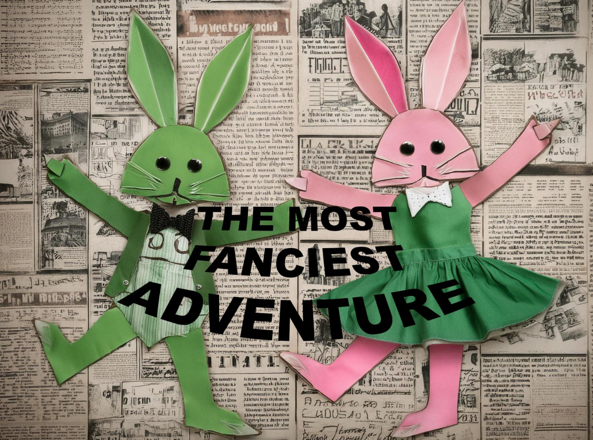
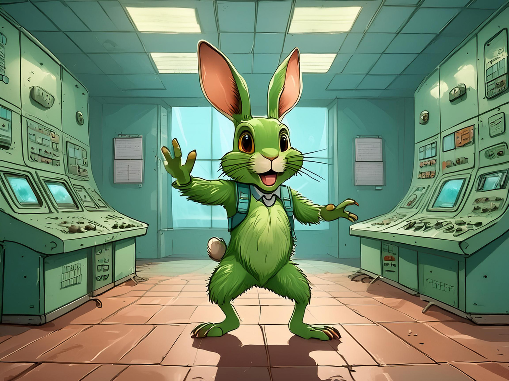
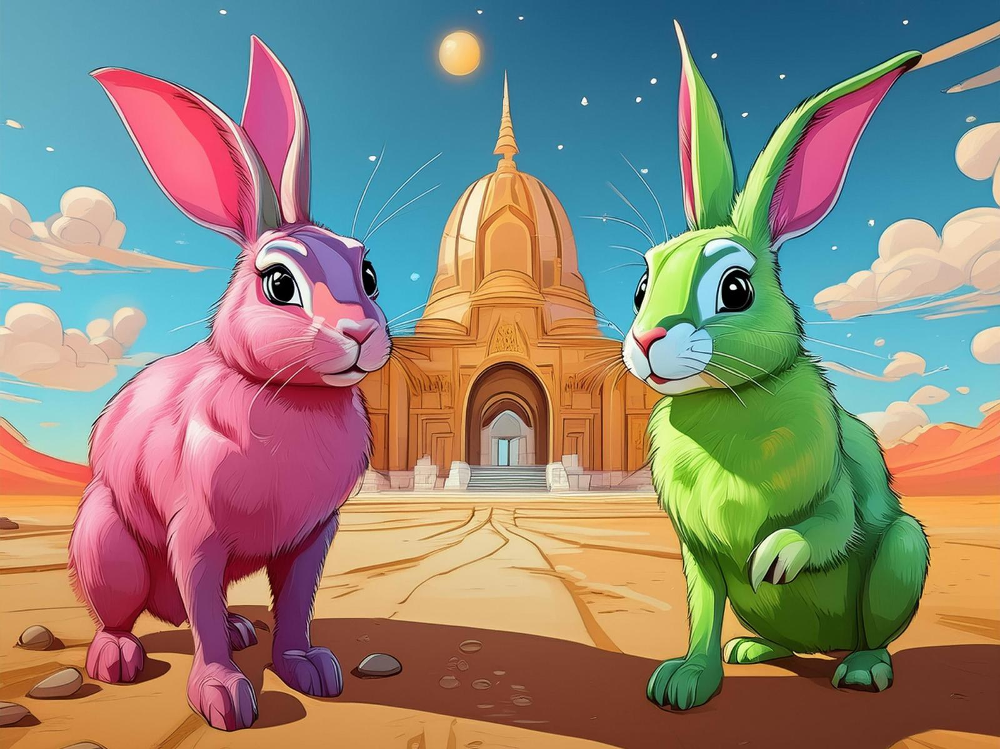
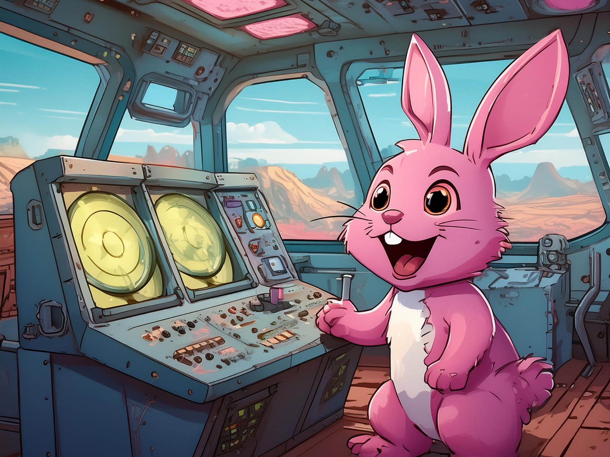

Dieses Projekt entstand in Zusammenarbeit mit Anna Bansmann und hatte das Ziel, eine Geschichte mithilfe von KI-generierten Bildern zu visualisieren.
Der erste Schritt bestand darin, eine Geschichte zu entwickeln, die wir visualisieren wollten. Dabei erwies sich ChatGPT als nützlich, da wir nur wenige Stichpunkte eingeben mussten, um eine komplette Geschichte zu generieren. Diese Geschichte teilten wir untereinander auf und ließen dazu Bilder erstellen. Dafür nutzten wir die Photoshop Beta-App, die über eine eigene KI-Funktion verfügt.
Beim Generieren der Bilder war es entscheidend, präzise und passende Stichpunkte vorzugeben, um die gewünschten Ergebnisse zu erzielen. Dabei stießen wir jedoch auf einige Herausforderungen. Beispielsweise generierte die KI manchmal sieben Finger an einer Hand statt der üblichen fünf, oder sie interpretierte unsere Vorgaben nicht ganz richtig.

Auch die Wahl und Beschreibung eines einheitlichen Art-Stils, damit die Bilder zueinander passen, stellte sich als schwierig heraus. Es erforderte viel Experimentieren und Ausprobieren, um das gewünschte Ergebnis zu erzielen.
Mit der Zeit entwickelten wir ein besseres Verständnis dafür, wie man die KI steuern muss. Dennoch fiel uns beim Zusammenführen des Projekts auf, dass einige Bilder nicht gut zueinander passten und wir dafür keine Lösung fanden.

